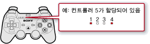

게임 > PlayStation®3 규격 소프트웨어 즐기기 > 게임 플레이 중에 설정하기
게임 플레이 중에 설정하기
게임 플레이 중에 컨트롤러를 설정할 수 있습니다. 게임 플레이 중에 무선 컨트롤러의 PS 버튼을 눌러 방향키로  (설정) >
(설정) >  (주변기기 설정)을 선택합니다.
(주변기기 설정)을 선택합니다.
컨트롤러 할당
할당된 컨트롤러 번호를 변경할 수 있습니다. 소프트웨어에서 사용하는 컨트롤러 번호가 지정되어 있는 경우에는 대응하는 번호를 할당해 주십시오.
알아두기
컨트롤러 윗부분의 포트 표시등에서 현재 할당된 컨트롤러 번호를 확인하실 수 있습니다. 5~7이 할당되어 있을 때는 숫자를 더해서 표시합니다.

컨트롤러 진동 기능
진동 기능의 켜기/끄기를 설정합니다. PS3™의 진동 기능에 대응하는 컨트롤러에서만 설정할 수 있습니다.
알아두기
- 이 설정은 연결한, 진동 기능에 대응하는 모든 컨트롤러에서 유효합니다.
- PS3™에서 [끄기]로 설정하면 게임에서 진동 기능을 활성화해도 진동하지 않습니다.